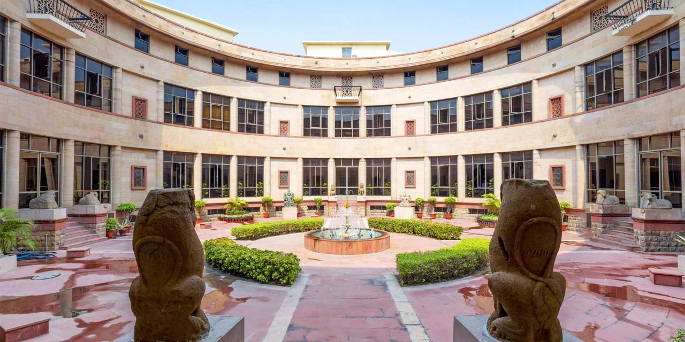
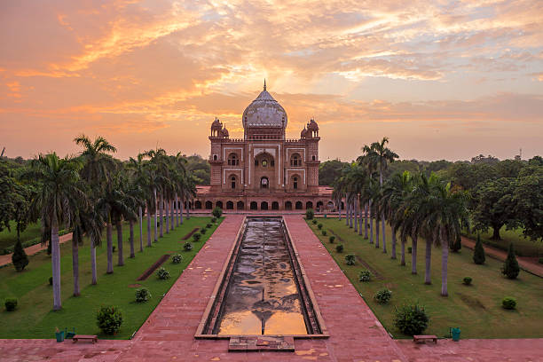
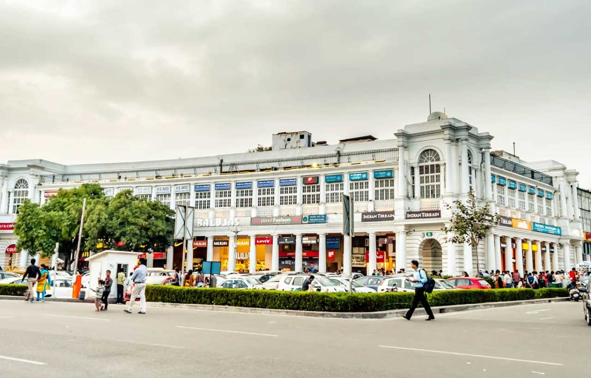

~The soul of India beats strongest here.
Red Fort: The Majestic Mughal Marvel
The Red Fort, a UNESCO World Heritage Site, is a stunning example of Mughal architecture and a symbol of India's rich history. It was the main residence of the Mughal emperors for nearly 200 years.
Fun Fact:
~The fort's red sandstone walls stretch over 2 kilometers and were built by Emperor Shah Jahan in 1638!
Things to Explore in Red Fort:
-
Diwan-i-Aam (Hall of Public Audience):
Marvel at the intricate carvings and grand architecture where the emperor addressed the public.
-
Diwan-i-Khas (Hall of Private Audience):
Visit the opulent hall where the emperor met with important guests.
-
Rang Mahal (Palace of Colors):
Explore the beautiful palace adorned with colorful frescoes and intricate designs.
-
Museum:
Dive into India's history through various exhibits showcasing artifacts from the Mughal era.
-
Light and Sound Show:
Experience the captivating show that narrates the history of the fort and its significance.
Why Visit Red Fort?
!Because it’s a magnificent piece of history that offers a glimpse into India's glorious past and architectural brilliance!
Jama Masjid: The Grand Mosque of Delhi
Jama Masjid, one of the largest mosques in India, is a stunning example of Mughal architecture. It was commissioned by Emperor Shah Jahan in 1656 and can accommodate over 25,000 worshippers.
Fun Fact:
~The mosque's minarets stand at a height of 40 meters and offer panoramic views of Old Delhi!
Things to Explore in Jama Masjid:
-
Main Courtyard:
Admire the vast courtyard that can hold thousands of devotees during prayers.
-
Minarets:
Climb the minarets for breathtaking views of the bustling streets of Old Delhi.
-
Mosque Museum:
Learn about the history and significance of the mosque through various exhibits.
-
Local Street Food:
Explore the vibrant street food scene around the mosque, offering delicious local delicacies.
-
Evening Prayers:
Experience the serene atmosphere during evening prayers when the mosque is beautifully lit.
Why Visit Jama Masjid?
!Because it’s a magnificent architectural marvel that offers a spiritual experience and a glimpse into Delhi's rich cultural heritage!
Chandni Chowk: The Heart of Old Delhi
Chandni Chowk, one of the oldest and busiest markets in Delhi, is a vibrant hub of culture, history, and commerce. It was established in the 17th century by Mughal Emperor Shah Jahan.
Fun Fact:
~The name "Chandni Chowk" means "Moonlit Square," and it was designed to reflect moonlight on the water channels that once flowed through it!
Things to Explore in Chandni Chowk:
-
Paranthe Wali Gali:
Indulge in delicious stuffed parathas from the famous eateries in this narrow lane.
-
Gurudwara Sis Ganj Sahib:
Visit this historic Sikh temple that commemorates the martyrdom of Guru Tegh Bahadur.
-
Kinari Bazaar:
Shop for vibrant wedding attire, jewelry, and traditional Indian handicrafts.
-
Fatehpuri Masjid:
Explore this beautiful mosque built by Empress Fatehpuri Begum in 1650.
-
Spice Market (Khari Baoli):
Experience the aromatic spice market, one of the largest in Asia.
Why Visit Chandni Chowk?
!Because it’s a bustling market that offers a unique blend of history, culture, and culinary delights!

Raj Ghat: The Final Resting Place of Mahatma Gandhi
Raj Ghat is a memorial dedicated to Mahatma Gandhi, the Father of the Nation. It is located on the banks of the Yamuna River and serves as a serene tribute to his life and legacy.
Fun Fact:
~The memorial features an eternal flame that burns in memory of Gandhi, symbolizing his enduring spirit!
Things to Explore in Raj Ghat:
-
Gandhi Samadhi:
Pay your respects at the simple black marble platform that marks the spot where Gandhi was cremated.
-
Memorial Gardens:
Stroll through the beautifully landscaped gardens that surround the memorial.
-
Museum:
Learn about Gandhi's life and philosophy through various exhibits and photographs.
-
Reflection Pool:
Enjoy the peaceful ambiance by the reflection pool that mirrors the memorial.
-
Evening Light Show:
Experience a captivating light show that narrates Gandhi's journey and teachings.
Why Visit Raj Ghat?
!Because it’s a place of reflection and remembrance, honoring the legacy of one of history's greatest leaders!

Humayun's Tomb: The Mughal Garden Tomb
Humayun's Tomb is a UNESCO World Heritage Site and the final resting place of Mughal Emperor Humayun. It is a stunning example of Mughal architecture and is surrounded by beautiful gardens.
Fun Fact:
~The tomb was commissioned by Humayun's widow, Empress Bega Begum, in 1569 and is considered a precursor to the Taj Mahal!
Things to Explore in Humayun's Tomb:
-
Main Tomb:
Marvel at the grand structure with its red sandstone and white marble façade.
-
Char Bagh Gardens:
Stroll through the beautifully landscaped gardens that represent the Persian style of garden design.
-
Tomb of Isa Khan:
Visit the tomb of Isa Khan, a noble in the court of Sher Shah Suri, located within the complex.
-
Sundial:
Explore the ancient sundial that adds to the charm of the gardens.
-
Museum:
Dive into the history of the Mughal era through various exhibits displayed in the complex.
Why Visit Humayun's Tomb?
!Because it’s a magnificent architectural masterpiece that offers a glimpse into the grandeur of Mughal history and culture!
India Gate: The War Memorial of Delhi
India Gate is a war memorial dedicated to the soldiers who sacrificed their lives during World War I and the Anglo-Afghan Wars. It stands tall as a symbol of national pride and remembrance.
Fun Fact:
~The archway is 42 meters high and was designed by Sir Edwin Lutyens in 1921!
Things to Explore in India Gate:
-
Amar Jawan Jyoti:
Pay homage at the eternal flame that burns in memory of the unknown soldier.
-
Surrounding Gardens:
Relax in the lush green gardens that surround the monument, perfect for picnics and leisurely walks.
-
Evening Light Show:
Experience the mesmerizing light show that illuminates the monument at night.
-
Nearby Attractions:
Explore nearby attractions like Rashtrapati Bhavan and National Gallery of Modern Art.
-
Street Vendors:
Savor local snacks from the street vendors that line the pathways around India Gate.
Why Visit India Gate?
!Because it’s a poignant reminder of India's rich history and a place to honor the sacrifices made for the nation!
Jantar Mantar: The Astronomical Observatory
Jantar Mantar is an astronomical observatory built in the 18th century by Maharaja Jai Singh II. It features a collection of architectural astronomical instruments used for observing celestial bodies.
Fun Fact:
~The name "Jantar Mantar" means "Instrument for Measuring the Harmony of the Heavens"!
Things to Explore in Jantar Mantar:
-
Samrat Yantra:
Marvel at the world's largest stone sundial, which can measure time with remarkable accuracy.
-
Jai Prakash Yantra:
Explore the hemispherical structures that allow for precise observations of celestial bodies.
-
Ram Yantra:
Visit the unique instruments designed for measuring altitudes and azimuths of stars.
-
Observatory Museum:
Dive into the history of astronomy through various exhibits displayed in the museum.
-
Evening Stargazing:
Join guided tours for stargazing sessions to observe celestial phenomena through telescopes.
Why Visit Jantar Mantar?
!Because it’s a fascinating blend of science and architecture, offering insights into ancient Indian astronomy!

Lotus Temple: The Bahá'í House of Worship
The Lotus Temple, also known as the Bahá'í House of Worship, is an architectural marvel shaped like a lotus flower. It is open to people of all faiths and serves as a place of meditation and reflection.
Fun Fact:
~The temple's design symbolizes purity and peace, and it has won numerous architectural awards!
Things to Explore in Lotus Temple:
-
Prayer Hall:
Experience the serene atmosphere in the prayer hall, which can accommodate over 2,500 people.
-
Gardens:
Stroll through the beautifully landscaped gardens that surround the temple.
-
Meditation Rooms:
Find tranquility in the meditation rooms designed for quiet reflection.
-
Visitor Center:
Learn about the Bahá'í faith and the significance of the temple through informative exhibits.
-
Evening Light Show:
Enjoy the mesmerizing light show that illuminates the temple at night.
Why Visit Lotus Temple?
!Because it’s a symbol of unity and peace, offering a serene escape from the bustling city life!
Qutub Minar: The Tallest Brick Minaret
Qutub Minar is a UNESCO World Heritage Site and the tallest brick minaret in the world. It was built in the 12th century and stands at a height of 73 meters.
Fun Fact:
~The minaret is adorned with intricate carvings and inscriptions in Arabic, showcasing the artistry of the era!
Things to Explore in Qutub Minar:
-
Main Minaret:
Climb the spiral staircase to enjoy panoramic views of the surrounding area.
-
Quwwat-ul-Islam Mosque:
Visit the mosque located at the base of the minaret, one of the earliest mosques built in India.
-
Iron Pillar:
Marvel at the ancient iron pillar that has stood for over 1,600 years without rusting.
-
Archaeological Museum:
Dive into the history of the site through various exhibits displayed in the museum.
-
Evening Light Show:
Experience the captivating light show that narrates the history of Qutub Minar.
Why Visit Qutub Minar?
!Because it’s a magnificent architectural wonder that offers a glimpse into India's rich cultural heritage!
National Gallery of Modern Art: A Journey Through Indian Art
The National Gallery of Modern Art (NGMA) is a premier art museum in India, showcasing a vast collection of modern and contemporary Indian art. It is housed in a beautiful heritage building that adds to the charm of the experience.
Fun Fact:
~The gallery's collection includes works by renowned artists like Rabindranath Tagore, Jamini Roy, and Amrita Sher-Gil!
Things to Explore in NGMA:
-
Permanent Collection:
Explore the extensive collection of paintings, sculptures, and photographs from the 19th century to the present.
-
Temporary Exhibitions:
Visit rotating exhibitions that feature contemporary artists and thematic displays.
-
Art Library:
Dive into the art library that houses a vast collection of books and journals on art and culture.
-
Sculpture Garden:
Stroll through the outdoor sculpture garden that features works by various artists.
-
Guided Tours:
Join guided tours to gain insights into the artworks and the history of Indian art.
Why Visit National Gallery of Modern Art?
!Because it’s a treasure trove of artistic expression, offering a unique perspective on India's modern art scene!

National Museum: A Journey Through India's Heritage
The National Museum in Delhi is one of the largest museums in India, housing a vast collection of artifacts that span over 5,000 years of Indian history. It offers a comprehensive insight into the country's rich cultural heritage.
Fun Fact:
~The museum's collection includes rare artifacts like the Indus Valley Civilization seals and ancient sculptures from various dynasties!
Things to Explore in National Museum:
-
Archaeological Gallery:
Discover artifacts from the Indus Valley Civilization, Mauryan Empire, and Gupta period.
-
Decorative Arts Gallery:
Admire exquisite jewelry, textiles, and metalwork from different regions of India.
-
Miniature Paintings Gallery:
Explore the intricate miniature paintings that depict historical events and royal courts.
-
Buddhist Art Gallery:
Dive into the rich tradition of Buddhist art through sculptures and paintings.
-
Temporary Exhibitions:
Visit rotating exhibitions that showcase contemporary art and cultural themes.
Why Visit National Museum?
!Because it’s a treasure trove of India's history and culture, offering a fascinating journey through time!

Safdarjung Tomb: The Last Mughal Garden Tomb
Safdarjung Tomb is a beautiful garden tomb built in the 18th century for Safdarjung, the Nawab of Awadh. It is a stunning example of Mughal architecture and is surrounded by lush gardens.
Fun Fact:
~The tomb's architecture is a blend of Mughal and Persian styles, making it a unique masterpiece!
Things to Explore in Safdarjung Tomb:
-
Main Tomb:
Admire the grand structure with its intricate carvings and beautiful domes.
-
Gardens:
Stroll through the expansive gardens that feature fountains, pathways, and lush greenery.
-
Mosque:
Visit the small mosque located within the complex, adding to the spiritual ambiance.
-
Museum:
Dive into the history of the tomb and its significance through various exhibits displayed in the museum.
-
Evening Light Show:
Experience the captivating light show that narrates the history of Safdarjung Tomb.
Why Visit Safdarjung Tomb?
!Because it’s a serene escape from the bustling city life, offering a glimpse into the grandeur of Mughal architecture!
Tughlaqabad Fort: The Ruins of a Forgotten Era
Tughlaqabad Fort is a massive fort built in the 14th century by Ghiyas-ud-din Tughlaq, the founder of the Tughlaq dynasty. It is known for its impressive architecture and historical significance.
Fun Fact:
~The fort was built in just four years and is surrounded by a 10-kilometer-long wall!
Things to Explore in Tughlaqabad Fort:
-
Main Gate:
Enter through the grand main gate that leads to the fort's interior.
-
Ruins of Palaces:
Explore the remnants of palaces and structures that once adorned the fort.
-
Stepwell:
Visit the ancient stepwell that provided water to the fort's inhabitants.
-
Scenic Views:
Enjoy panoramic views of the surrounding landscape from various vantage points within the fort.
-
Guided Tours:
Join guided tours to learn about the history and architecture of Tughlaqabad Fort.
Why Visit Tughlaqabad Fort?
!Because it’s a fascinating historical site that offers a glimpse into Delhi's medieval past and architectural brilliance!

Connaught Place: The Heart of Modern Delhi
Connaught Place, also known as CP, is a bustling commercial and financial center in Delhi. It is famous for its colonial architecture, vibrant markets, and a wide range of dining and entertainment options.
Fun Fact:
~Connaught Place is one of the largest financial centers in India and was designed by British architect Robert Tor Russell in 1931!
Things to Explore in Connaught Place:
-
Central Park:
Relax in the lush green Central Park located at the heart of Connaught Place.
-
Shopping:
Explore the numerous shops, boutiques, and street vendors offering a variety of products.
-
Dining:
Savor delicious cuisines from various restaurants and cafes that line the streets.
-
Cultural Events:
Attend cultural events and performances that are often held in the area.
-
Nightlife:
Experience the vibrant nightlife with numerous bars and clubs that come alive after dark.
Why Visit Connaught Place?
!Because it’s a lively hub that offers a perfect blend of history, culture, shopping, and entertainment!
Chhatrasal Stadium: The Sports Arena of Delhi
Chhatrasal Stadium is a multi-purpose sports complex that hosts various sporting events, including wrestling, athletics, and football. It is named after the legendary Maratha king Chhatrasal.
Fun Fact:
~The stadium has hosted numerous national and international sporting events, making it a significant venue in Delhi!
Things to Explore in Chhatrasal Stadium:
-
Wrestling Matches:
Watch thrilling wrestling matches featuring some of the best wrestlers in the country.
-
Athletics Events:
Attend athletics events and cheer for your favorite athletes.
-
Football Matches:
Experience the excitement of football matches held at the stadium.
-
Training Sessions:
Observe training sessions of athletes and wrestlers honing their skills.
-
Sports Facilities:
Explore the state-of-the-art sports facilities available at the stadium.
Why Visit Chhatrasal Stadium?
!Because it’s a vibrant sports arena that showcases the spirit of competition and athleticism in Delhi!
Kingdom of Dreams: The Entertainment Hub
Kingdom of Dreams is a spectacular entertainment complex that showcases India's rich cultural heritage through theatrical performances, musicals, and live shows. It is a must-visit for anyone looking to experience the magic of Indian entertainment.
Fun Fact:
~The complex features a grand auditorium with a seating capacity of over 2,000 people, making it one of the largest theaters in India!
Things to Explore in Kingdom of Dreams:
-
Nautanki Mahal:
Watch mesmerizing theatrical performances that bring Indian stories to life.
-
Showshaa Theatre:
Experience live musical performances and dance shows that celebrate Indian culture.
-
Culture Gully:
Explore the vibrant street food and shopping area that represents different states of India.
-
Workshops:
Participate in workshops that offer insights into various art forms and crafts.
-
Evening Shows:
Enjoy spectacular evening shows that combine music, dance, and drama.
Why Visit Kingdom of Dreams?
!Because it’s a magical world of entertainment that offers a unique glimpse into India's diverse cultural heritage!